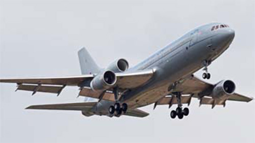

Tristar

- Разработчик: Lockheed
- Страна: Великобритания
- Первый полет: 1982
- Тип: Стратегический военно-транспортный самолет
TriStar также поступил на военную службу - британское Министерство обороны в 1982-1984 годах закупило девять самолетов L-1011-500, восемь из них поступили в 216-ю эскадрилью ВВС. В рамках специально разработанной программы четыре самолета были переоборудованы в самолеты-заправщики/транспортные самолеты TriStar K.Mk 1. Под полом кабины в носовом и хвостовом багажных отсеках были размещены дополнительные топливные баки на 45 360 кг топлива, топливозаправочные агрегаты Flight Refuelling Ltd HDU внизу хвостовой части фюзеляжа и ТВ-система для контроля процесса заправки. В носовой части установили штангу топливоприемника, а в кабине установили кресла для пассажиров. Первый полет модернизированный самолет выполнил 9 июля 1985 года. В середине 1990-х годов в эксплуатации оставались два из четырех K.Mk 1, которые вместе с двумя приобретенными позже TriStar прошли модернизацию в вариант самолета-заправщика/грузового TriStar KC.Mk 1.
TriStar KC.Mk 1 поднялся впервые в воздух в 1988 году и отличался расположенной по левому борту грузовой дверью и системой обработки грузов. Самолет в грузовом варианте мог перевозить груз на поддонах и 35 пассажиров. Пол кабины был усилен.
Два самолета под обозначением TriStar C.Mk 2 использовались в качестве военно-транспортных и не имели штанг топливоприемников. Планы по модернизации третьего самолета - с установкой подкрыльевых контейнеров Mk 32B с топливозаправочными агрегатами - реализованы не были, а самолет был поставлен в варианте TriStar C.Mk 2A и отличался военным БРЭО, новым интерьером и заменой вызывавшего нарекания цифрового автопилота на аналоговый вариант (как на K.Mk 1 и KC.Mk1). Все TriStar британских ВВС оснащались станциями предупреждения о радиолокационном облучении ALR-66.
| Летно технические характеристики | |
|---|---|
| Модификация | Tristar KС. Mk.I |
| Размах крыла максимальный, м | 50.09 |
| Длина, м | 50.05 |
| Высота, м | 16.87 |
| Площадь крыла, м2 | 328.96 |
| Масса, кг | |
| - пустого самолета | 110163 |
| - нормальная взлетная | 244944 |
| Тип двигателя | 3 ТВД Rolls-Royce RB.211-524B |
| Тяга, кН | 3 х 222.41 |
| Крейсерская скорость, км/ч | 964 |
| Практическая дальность, км | 7783 |
| Практический потолок, м | 13105 |
| Экипаж, чел | 3 |
| Полезная нагрузка: | 194 пассажира или 44500 кг груза или 45387 кг топлива в роли самолета заправщика. |